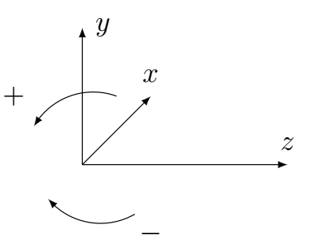
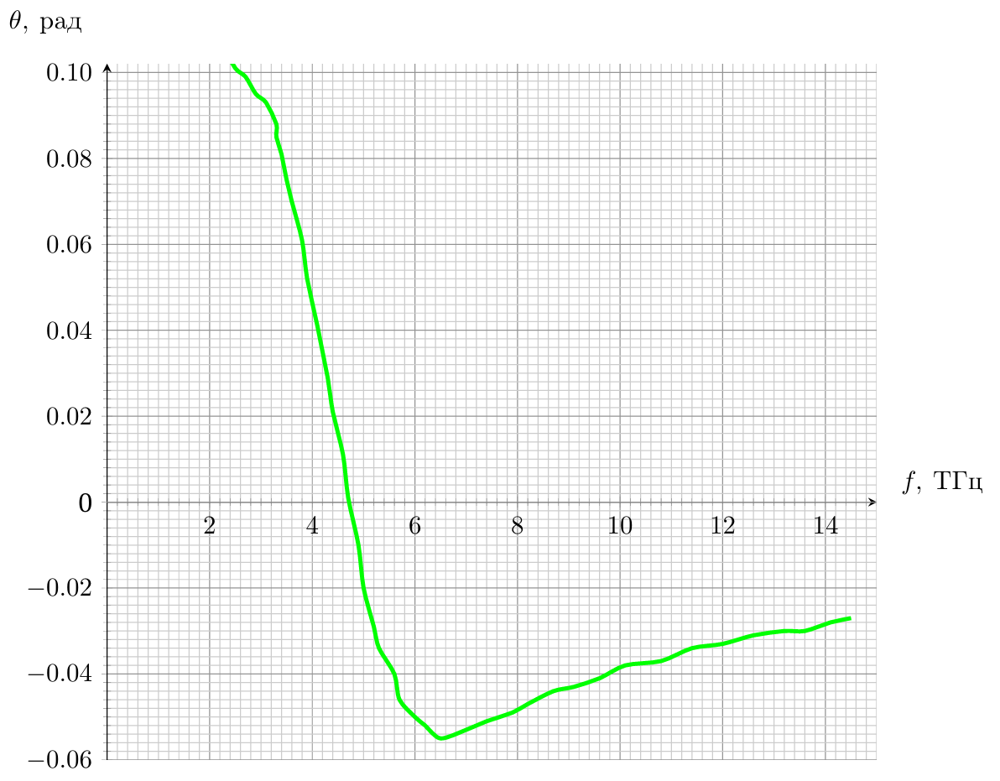
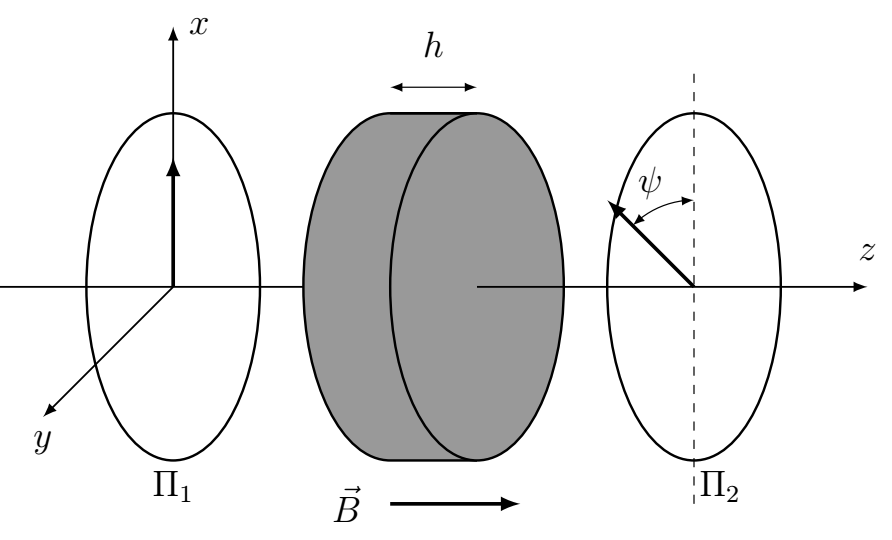

Y26 (2026) — English translation
The rotation of the plane of polarization of radiation passing through a substance placed in a magnetic field is called the Faraday effect. This effect can be used to measure magnetic fields, as well as in various optical devices that work with polarized light. It is possible to achieve a noticeable polarization rotation angle even in a very thin sample. To do this, it is necessary to ensure a sufficient surface density of electrons with a large free path. This can be realized, for example, in an electron gas arising at the interface of different semiconductors. Another system in which the Faraday effect is observed is graphene, a two-dimensional structure of carbon atoms that is only one atom thick.
In this you can use the following values of fundamental constants: $q = 1.602 \cdot 10^{-19}~\text{Кл}$ – electron charge modulus; $\varepsilon_0 = 8.854 \cdot 10^{-12} ~\text{Ф}/\text{м}$ – electrical constant; $\hbar =1.055 \cdot 10^{-34} ~\text{Дж} \cdot {с}$ – Planck’s constant; $c =2.998 \cdot 10^{8} ~\text{м}/\text{с} $ – speed of light in vacuum. The entire problem uses a right-handed coordinate system $xyz$.
The entire problem uses a right-handed coordinate system $xyz$.
In this part, we will study the conductivity of an electron gas with a volumetric electron concentration $n$. To describe electrons, we will use the Drude model, in which electrons are free non-relativistic particles of mass $m$ with charge $-q$. When moving inside a substance, they sometimes scatter on defects in the crystal lattice and on each other. The effect of collisions can be described by introducing the effective viscous force $\vec{F} = - m \vec{v}/\tau$, $\tau$ – the characteristic time between collisions. Let the system be subject to a uniform electric field varying with a cyclic frequency $\omega$. In complex notation it has the form $$ \vec{E} = \vec{E}_0 e^{-i\omega t}. $$Тогда среднюю скорость электронов можно записать в виде $\vec{v} = \vec{v}_0 e^{-i \omega t}$, а плотность тока $\vec{j} = \vec{j}_0 e^{-i \omega t}$. Плотность тока связана с электрическим полем комплексной зависящей от частоты проводимостью $$ \vec{j} = \sigma(\omega) \vec{E}. $$
The parameter $D$ introduced above is called the Drude weight.
In a more general case, the current component along a certain axis can depend on both field components; such a dependence can be represented as \begin{align*} j_x = \sigma_{xx}E_{x} + \sigma_{xy}E_{y};\\ j_y = \sigma_{yx} E_{x} + \sigma_{yy} E_{y}. \tag{1} \end{align*}
From the relations of the part $\textbf{A3}$ it follows that in a magnetic field, in the general case, the current density vector is not aligned with the electric field. In this part we will study a medium whose conductivity is described by formulas (1), and the relations $\sigma_{xx} = \sigma_{yy}$, $\sigma_{xy} = - \sigma_{yx}$ are satisfied. It turns out that if the electric field is created with a wave with circular polarization, that is, the electric field rotates in the $xy$ plane, then the $\vec{j} = \sigma_{\pm} \vec{E}$ relations are satisfied. Here the sign $+$ refers to the right circular polarization (the field rotates counterclockwise when viewed from the positive direction of the axis $z$), and the sign $-$ to the negative one (rotation in the opposite direction).
From the relations of the part $\textbf{A3}$ it follows that in a magnetic field, in the general case, the current density vector is not aligned with the electric field. In this part we will study a medium whose conductivity is described by formulas (1), and the relations $\sigma_{xx} = \sigma_{yy}$, $\sigma_{xy} = - \sigma_{yx}$ are satisfied. It turns out that if the electric field is created with a wave with circular polarization, that is, the electric field rotates in the $xy$ plane, then the $\vec{j} = \sigma_{\pm} \vec{E}$ relations are satisfied. Here the sign $+$ refers to the right circular polarization (the field rotates counterclockwise when viewed from the positive direction of the $z$ axis), and the sign $-$ to the negative one (rotation in the opposite direction).

In conducting media in an alternating field, current leads to a displacement of charges and the occurrence of polarization, and the polarization vector is related to the current density by the relation $\vec{j} = \partial \vec{P}/\partial{t}$.
If the conductivity is $\sigma_{xy} \neq 0 $, the same relationship is valid for waves with circular polarization, but the values of dielectric constants and refractive indices for waves with different circular polarizations are different.
The phenomenon of rotation of the plane of polarization in a magnetic field is called the Faraday effect. The resulting answer for $\theta_F$ in the general case contains an imaginary part corresponding to different attenuation of waves with different polarizations. Below, everywhere except $\textbf{B7}$, we will neglect this effect, and to describe the effect we will use the real part of the expression found earlier.
Graphene is a two-dimensional material consisting of a single layer of carbon atoms. As a result of considering the quantum mechanical model of the interaction of electrons with the graphene crystal lattice, it turns out that they can be described as particles moving with a constant speed $v_F$. This speed $v_F \ll c$ is called the Fermi speed. The energy of an electron in graphene is related to its momentum by the relation $\varepsilon = v_F p$, similar to the relation for an ultrarelativistic particle. For the Lorentz force, the standard relation applies. The electrical properties of graphene are determined by electrons with energies close to a certain value $\varepsilon_F$ (the so-called Fermi energy). Theoretical studies of the behavior of electrons in a carbon crystal (graphite) have been carried out since the middle of the 20th century, for example, in an article by F. Wallace. However, graphene became popular for study thanks to the experiments of Konstantin Novoselov and Andrei Geim, who received the Nobel Prize for them.
Theoretical studies of the behavior of electrons in a carbon crystal (graphite) have been carried out since the middle of the 20th century, for example, in an article by F. Wallace. However, graphene became popular for study thanks to the experiments of Konstantin Novoselov and Andrei Geim, who received the Nobel Prize for them.
Graph of the dependence of the rotation angle in graphene on the radiation frequency. Data from Crassee, I., Levallois, J., Walter, A. et al. Nature Phys 7, 48–51 (2011). $1~\text{ТГц} = 10^{12} ~\text{Гц}$

It is difficult to describe the conductivity of graphene using elementary methods. However, it turns out that the formula for the Faraday effect from $\textbf{B6}$ is still applicable if the correct values for the parameters $D$ and $\omega_B$ are chosen. Instead of $\omega_B$ you need to use the expression found in $\textbf{C1}$. The product $Dh$ must be replaced by the constant $D_2$ (a two-dimensional analogue of the Drude coefficient), which can be estimated using the formula $$D_2 = \frac{q^2}{2 \hbar^2} \varepsilon_F. $$
The optical isolator device is based on the Faraday effect. This is an optical device for which the intensity of transmitted light depends on the direction of propagation. This makes it possible to reduce the intensity of the transmitted back reflected light. Let's consider the simplest model of an optical isolator. It consists of two polaroids, the allowed directions of which are rotated by an angle $\psi$ relative to each other. Between them there is a substance for which the angle of rotation of the polarization plane of the wave propagating along the $z$ axis has the form $\varphi = VhB_z$, where $V$ is the Verdet constant, $h$ is the thickness of the substance layer, $B_z$ is the projection of the applied magnetic field.
$\Pi_1$, $\Pi_2$ - polaroids, bold arrows indicate permitted directions.

Source: https://pho.rs/p/5054